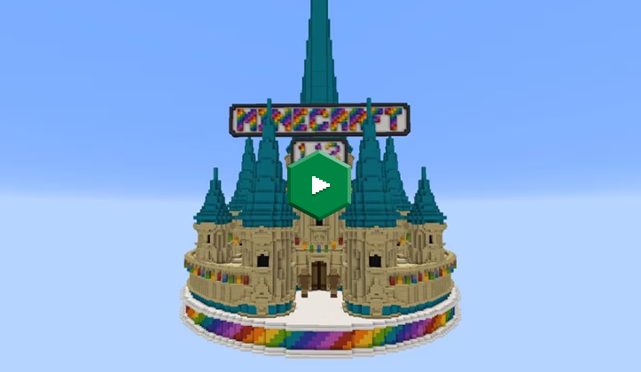

WORLD OF COLOR IS
RELEASED!
Sunlight yellow, chili red, royal blue, midnight black, grass green, lilac
purple, true lime, fresh salmon, hot cappuccino, pretty much all of the off-
white, annoying cyan, alpha-tested magenta, that brown-greenish barf
shade... the World of Color update is here! (Minecraft Java Edition 1.12,
editor's note.)
With this update we bring you a fresh take on all the colored blocks in
Minecraft, using the infamous "Jonni Palette 0.2" for wool, sheep, shulker
boxes, and banners, and introducing glazed terracotta, colored beds, and
colored concrete. These bring you many new options to building colorful
creations in your meticulously planned spawn area.
We asked the community to show us what they could do with the new
blocks - and the results were a technicolour triumph! We took some of our
favourites and put them in the trailer below!
image contains link!
The World of Color update also introduces the recipe book and a whole new
advancements system. These will help guiding your way through the
adventure of Minecraft, and can be utilized by creators to make interesting
custom adventure maps and mini games.
And lets not forget, parrots! :partyparrot
The World of Color change log,